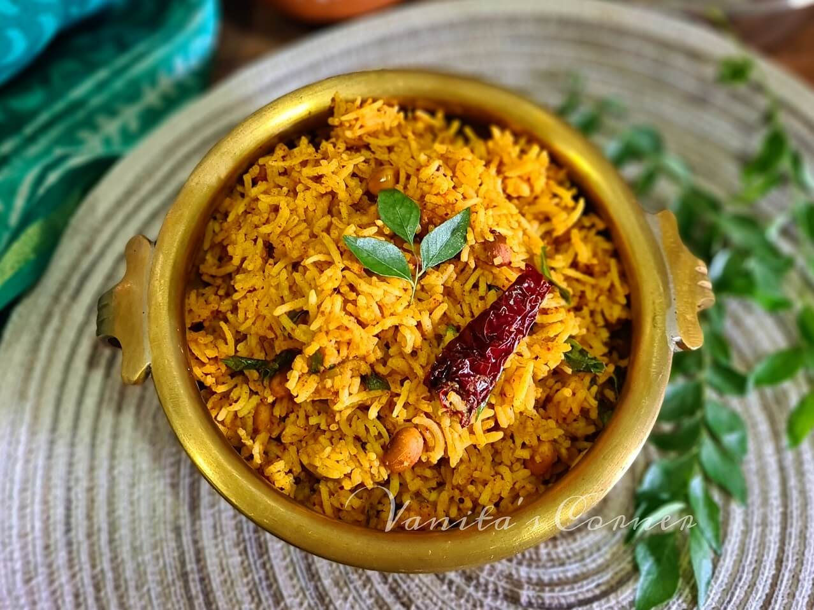
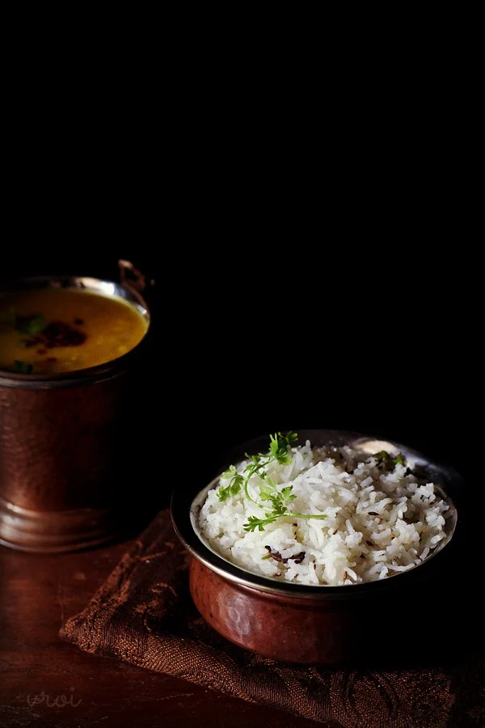
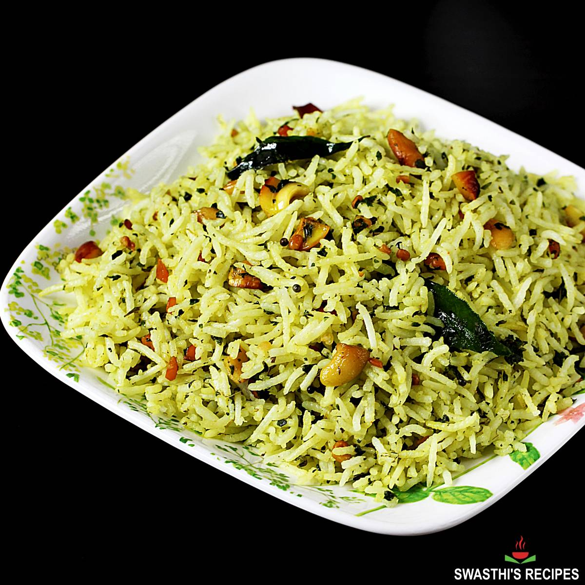

Here is a collection of the most authentic, delicious and finest Indian Rice Food Preparations. Dive into all of them Right Now!
Puliyogare, also called pulihora or tamarind rice, is a traditional South Indian-style recipe prepared with rice, tamarind, and aromatic spices. One of the popular lunchbox and prasadam recipes prepared at temples and homes during Navratri or any puja.
Check out our detailed step by step recepie here.
Nearly as ubiquitous as Naan and just as satisfying, this Jeera Rice recipe is the quintessential restaurant style Indian side dish. Fragrant basmati rice is scented with cumin seeds, cardamom and green chilli for lovely, long grains that pair beautifully with just about any of your favorite mains.
Check out our detailed step by step recepie here.
Veg Biryani is an authentic Indian vegetarian dish packed full of your favorite rice, veggies, and spices. Made with patience and lots of love, this delicious Hyderabadi Veg Dum Biryani requires both care and attention to detail. The savory flavors in your first bite are well worth the time and effort spent in the kitchen.
Check out our detailed step by step recepie here.

Pudina Rice or Pudina Pulao is a fragrant, spicy and tasty one-pot dish made with fresh mint leaves, basmati rice, onion, tomato, some more spices and herbs. I also include some green peas and potatoes to make it hearty, flavorful and satisfying dish. This green colored Mint Rice is also a vegan and gluten-free recipe.
Check out our detailed step by step recepie here.
